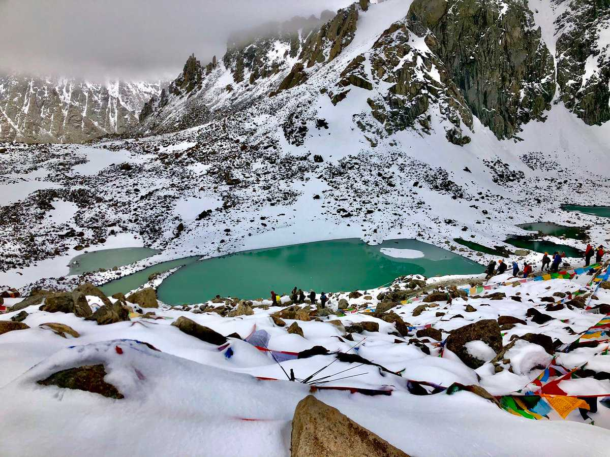
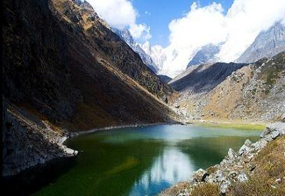
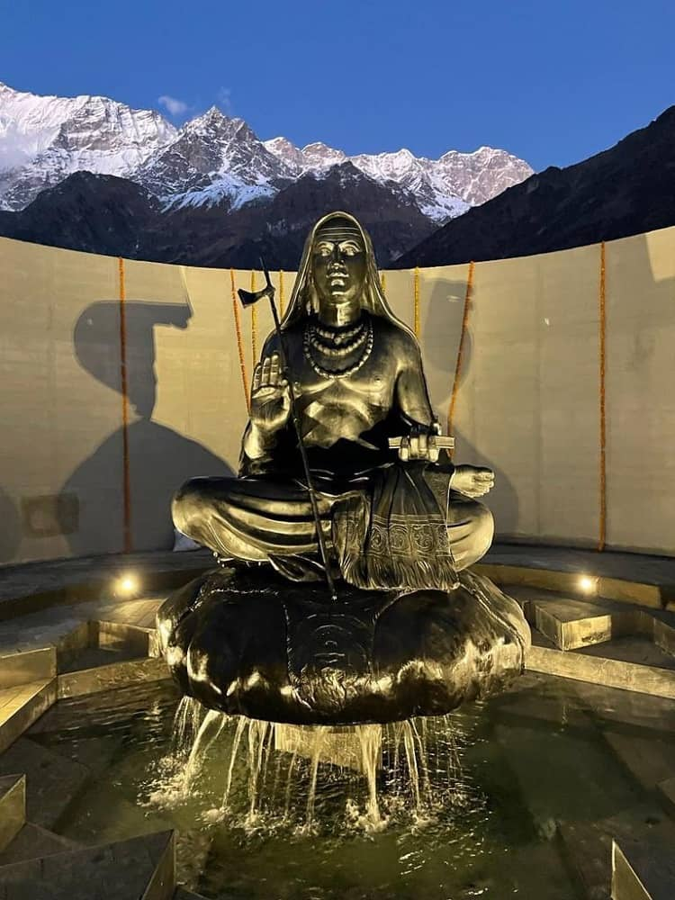
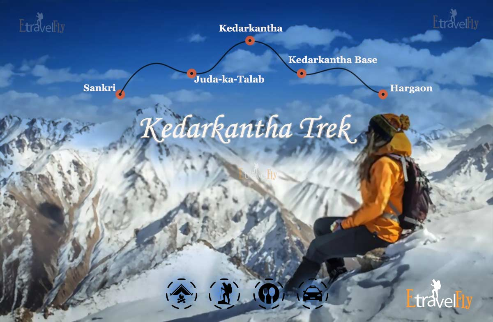
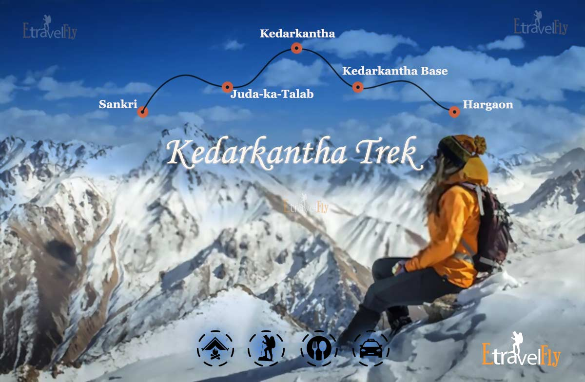

Kedarnath is one of the holiest pilgrimage sites in India, dedicated to Lord Shiva. It is part of the Chota Char Dham Yatra (small pilgrimage circuit) in Uttarakhand, which includes Badrinath, Gangotri, and Yamunotri. Known for its spiritual importance and natural beauty, Kedarnath offers an awe-inspiring combination of religious devotion and breathtaking scenery.



 

Significance: One of the 12 Jyotirlingas, the Kedarnath Temple is dedicated to Lord Shiva. It is believed that the Pandavas built the original temple, and it was later renovated by Adi Shankaracharya in the 8th century.
Architecture: The temple is made of massive stone slabs, standing tall even after natural calamities. The deity inside the temple is a triangular-shaped lingam, representing Lord Shiva.
Timings:The temple opens from April/May to November each year, as it is closed during winter due to heavy snowfall.
Starting Point: The trek to Kedarnath begins from Gaurikund. It's a holy site where Goddess Parvati is believed to have meditated to win the affection of Lord Shiva.
Gaurikund Temple and Hot Springs:There are natural hot springs where pilgrims take a dip before starting their trek to Kedarnath.
Distance from Kedarnath: About 3 km from the temple.
Attraction: This high-altitude lake offers crystal-clear waters with a backdrop of snow-covered peaks. It is also where Mahatma Gandhi's ashes were scattered.
The Shankaracharya Samadhi is located at a distance of about 600 meters from the Kedarnath Temple, and it can be reached by foot. Visitors are advised to wear comfortable walking shoes and carry water and snacks, as the walk to the Samadhi can be tiring, The Samadhi is made of black stone and is surrounded by a small garden. The area around the Samadhi is peaceful and serene, and it offers a quiet place for meditation and introspection.
Distance from Kedarnath: 8 km trek from Kedarnath.
Attraction:A stunning glacial lake surrounded by majestic Himalayan peaks. The challenging trek offers breathtaking views and serenity.
Summer (May to June): This is the best time for visiting Kedarnath, with mild temperatures and clear skies.
Autumn (September to October): A great time for those looking for fewer crowds and pleasant weather.
Avoid Winter (November to April): The temple and surrounding region remain closed due to heavy snowfall. The idol of Lord Shiva is shifted to Ukhimath during this period.
By Air:The nearest airport is Jolly Grant Airport, Dehradun, which is about 238 km from Gaurikund (the base of the trek).From the airport, you can hire a taxi or take a bus to reach Gaurikund.
By Train:The nearest railway station is at Rishikesh (approx. 216 km away).From Rishikesh, buses and taxis are available to Gaurikund.
By Road:Regular bus services operate from Rishikesh, Haridwar, and Dehradun to Gaurikund.Private taxis are also available for a more comfortable journey.
Trek:From Gaurikund, the 16 km trek to Kedarnath can be completed on foot, by hiring ponies or palkis (palanquins). Helicopter services are also available from Phata or Guptkashi for a quicker trip.
Physical Preparation: The trek is moderately challenging, so it's advisable to be physically prepared for the altitude and terrain.
Book Helicopter Services in Advance: If planning to use helicopter services, pre-booking is recommended, especially during peak seasons.
Respect the Environment: Avoid littering and respect the natural beauty and spiritual significance of the region.
Weather Awareness: Check weather conditions regularly, especially during the monsoon season, as the region is prone to landslides.